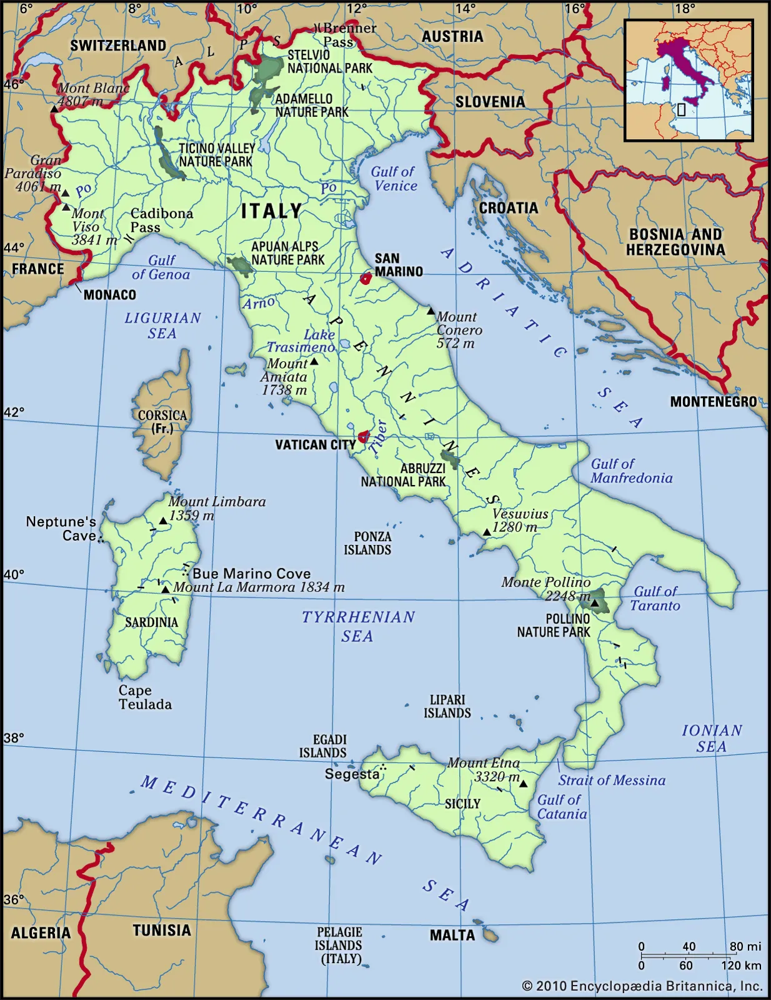
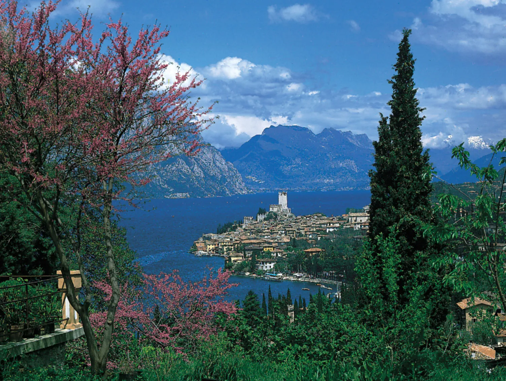
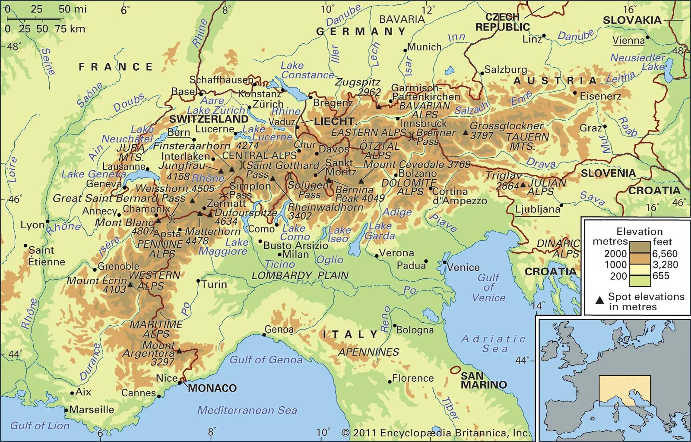

Land of Italy
To the north the Alps separate Italy from France, Switzerland, Austria, and Slovenia. Elsewhere Italy is surrounded by the Mediterranean Sea, in particular by the Adriatic Sea to the northeast, the Ionian Sea to the southeast, the Tyrrhenian Sea to the southwest, and the Ligurian Sea to the northwest. Areas of plain, which are practically limited to the great northern triangle of the Po valley, cover only about one-fifth of the total area of the country; the remainder is roughly evenly divided between hilly and mountainous land, providing variations to the generally temperate climate.
Relief
Mountain ranges higher than 2,300 feet (702 metres) occupy more than one-third of Italy. There are two mountain systems: the scenic Alps, parts of which lie within the neighbouring countries of France, Switzerland, Austria, and Slovenia; and the Apennines, which form the spine of the entire peninsula and of the island of Sicily. A third mountain system exists on the two large islands to the west, Italian Sardinia and French Corsica.Plains cover less than one-fourth of the area of Italy. Some of these, such as the Po valley and the Apulian Plain, are ancient sea gulfs filled by alluvium. Others, such as the Lecce Plain in Puglia, flank the sea on rocky plateaus about 65 to 100 feet (20 to 30 metres) high, formed of ancient land leveled by the sea and subsequently uplifted. Plains in the interior, such as the long Chiana Valley, are made by alluvial or other filling of ancient basins. The most extensive and important plain in Italy, that of the Po valley, occupies more than 17,000 of the 27,000 square miles (44,000 of the 77,000 square km) of Italian plain land. It ranges in altitude from sea level up to 1,800 feet (550 metres), the greater part below 330 feet (100 metres). Through it runs the Po River and all its tributaries and the Reno, Adige, Piave, and Tagliamento rivers. The plain falls into several natural divisions. At its highest end, by the Alpine foothills, it is made up of parallel ferretto (red loam composed of ferrous clay) ridges, running from north to south, with areas of gravel and permeable sand between them. This section of the plain is terraced and unproductive, although the rainfall is high. Below this is a section where the rivers rise, their waters eventually providing vital irrigation both for the marcite (winter pastures) and for the intensive agriculture of the fertile lower plain. Other notable plains include the maremme of Tuscany and Lazio, reclaimed marshland with dunes at the edge of the sea; the Pontine Marshes, a recently reclaimed seaward extension of the Roman countryside (campagna); the fertile Campania Plain around Vesuvius; and the rather arid Apulian Plain. In Sicily the Plain of Catania is a good area for growing citrus fruit.
Mountain ranges
The Alps run in a broad west-to-east arc from the Cadibona Pass, near Savona on the Gulf of Genoa, to north of Trieste, at the head of the Adriatic Sea. The section properly called Alpine is the border district that includes the highest masses, made up of weathered Hercynian rocks, dating from the Carboniferous and Permian periods (approximately 360 million to 250 million years ago). The Alps have rugged, very high peaks, reaching more than 12,800 feet (3,900 metres) in various spectacular formations, characterized as pyramidal, pinnacled, rounded, or needlelike. The valleys were heavily scoured by glaciers in the Quaternary Period (the past 2.6 million years); there are still more than 1,000 glaciers left, though in a phase of retreat, more than 100 having disappeared in the past half century or so. The Alpine mountain mass falls into three main groups. First, the Western Alps run north to south in Italy from Aosta to the Cadibona Pass, with Mount Viso (12,602 feet [3,841 metres]) and Gran Paradiso (13,323 feet [4,061 metres]), regarded as the highest mountain wholly within Italy, both base and peak. Second, the Central Alps run west to east from the Western Alps to the Brenner Pass, leading into Austria and the Trentino–Alto Adige valley, also with high peaks, such as Mont Blanc (with a summit just over the border in France of 15,771 feet [4,807 metres]), the Matterhorn (Italian Monte Cervino; 14,692 feet [4,478 metres]), Monte Rosa (with a summit just over the border in Switzerland of 15,203 feet [4,634 metres]), and Mount Ortles (12,812 feet [3,905 metres]). Lastly, the Eastern Alps run west to east from the Brenner Pass to Trieste and include the Dolomites (Dolomiti) and Mount Marmolada (10,968 feet [3,343 metres]). The Italian foothills of the Alps, which reach no higher than 8,200 feet (2,500 metres), lie between these great ranges and the Po valley. They are composed mainly of limestone and sedimentary rocks. A notable feature is the karst system of underground caves and streams that are especially characteristic of the Carso, the limestone plateau between the Eastern Alps and southwestern Slovenia.Apennine Range Apennine Range The Apennines are the long system of mountains and hills that run down the Italian peninsula from the Cadibona Pass to the tip of Calabria and continue on the island of Sicily. The range is about 1,245 miles (2,000 km) long; it is only about 20 miles (32 km) wide at either end but about 120 miles (190 km) wide in the Central Apennines, east of Rome, where the “Great Rock of Italy” (Gran Sasso d’Italia) provides the highest Apennine peak (9,554 feet [2,912 metres]) and the only glacier on the peninsula, Calderone, the southernmost in Europe. The Apennines comprise predominantly sandstone and limestone marl (clay) in the north; limestone and dolomite (magnesium limestone) in the centre; and limestone, weathered rock, and Hercynian granite in the south. On either side of the central mass are grouped two considerably lower masses, composed in general of more recent and softer rocks, such as sandstone. These sub-Apennines run in the east from Montferrat to the Gulf of Taranto and in the west from Florence southward through Tuscany and Umbria to Rome. This latter range is separated from the main Apennines by the valleys of the Arno and the Tiber rivers. At the outer flanks of the sub-Apennines, two allied series of limestone and volcanic rocks extend to the coast. They include, to the west, the Apuane Alps, which are famous for their marbles; farther south, the Metallifere Mountains (more than 3,380 feet [1,030 metres]), abundant in minerals; then various extinct volcanoes occupied by crater lakes, such as that of Bolsena; then cavernous mountains, such as Lepini and Circeo, and the partially or still fully active volcanic group of the Flegrei Plain and Vesuvius; and finally the limestone mountains of the peninsulas of Amalfi and Cilento. The extensions on the Adriatic coast are simpler, comprising only the small promontory of Mount Conero, the higher peninsula of Gargano (3,465 feet [1,056 metres]), and the Salentina Peninsula in Puglia. All these are limestone.
Coastal areas

The seacoasts are quite varied. Along the two Ligurian rivieras, on either side of Genoa, the coast alternates in rapid succession between high, rocky zones and level gravel. From Tuscany to Campania there are long, sandy, crescent beaches and abundant dunes, which are separated by rocky eminences. The coast of Calabria is high and rocky, though sometimes broken by short beaches. The coast of Puglia is level—as is, indeed, most of the Adriatic coast of Italy—although it is dominated by terraced gradients. The majestic delta of the Po River, extending from Rimini to Monfalcone, is riddled with the lagoons that are familiar to visitors to Venice. The Carso, the limestone coastal region between Trieste and Istria, is rocky.Italian rivers are comparatively short; the longest, the Po, is merely 400 miles (645 km) long. While three major rivers flow into the Ionian Sea, in Puglia only two rivers flow to the Adriatic. Along the Adriatic coast a good number run parallel like the teeth of a comb down from the Apennines through Molise, Abruzzo, and Marche regions. The rivers that flow into the Tyrrhenian Sea are longer and more complex and carry greater quantities of water. These include the Volturno, in Campania; the Roman Tiber; and the Arno, which flows through Florence and Pisa. The rivers of the Ligurian rivieras are mainly short and swift-flowing; a few are important simply because cities, such as Genoa, or beach resorts, such as Rapallo, are built on their deltas. But the prince of Italian rivers is the Po. Rising in the Mount Viso area, it runs across the Lombardy Plain, through various important cities such as Turin (Torino) and Cremona, and is steadily enlarged by the numerous tributaries, especially on its left bank. The Po debouches south of Venice, forming a large delta. In Veneto there are also rivers that are not tributaries of the Po. One of these is the Adige, the second longest river in Italy, which flows 254 miles (409 km), passing through Verona and debouching near Adria, south of Venice. The rivers in the south have imposing floods during winter storms, and those that run through zones of impermeable rock may become dangerous; yet during the summer many of these rivers are completely dry. The rivers of the centre and north are dry in the winter because their headwaters are frozen, but they become full in the spring from melting snow and in the autumn from rainfall.